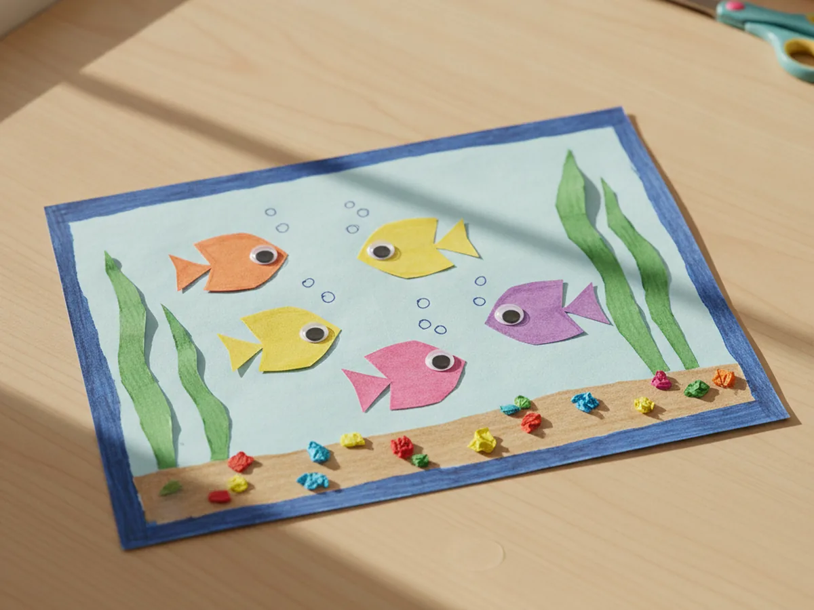
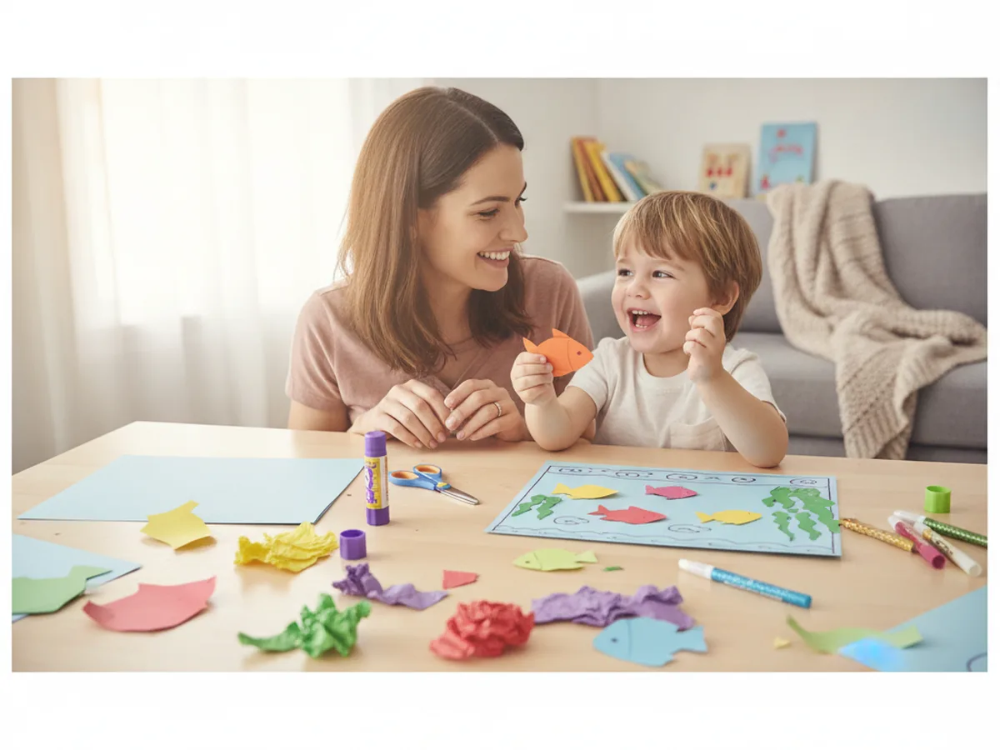
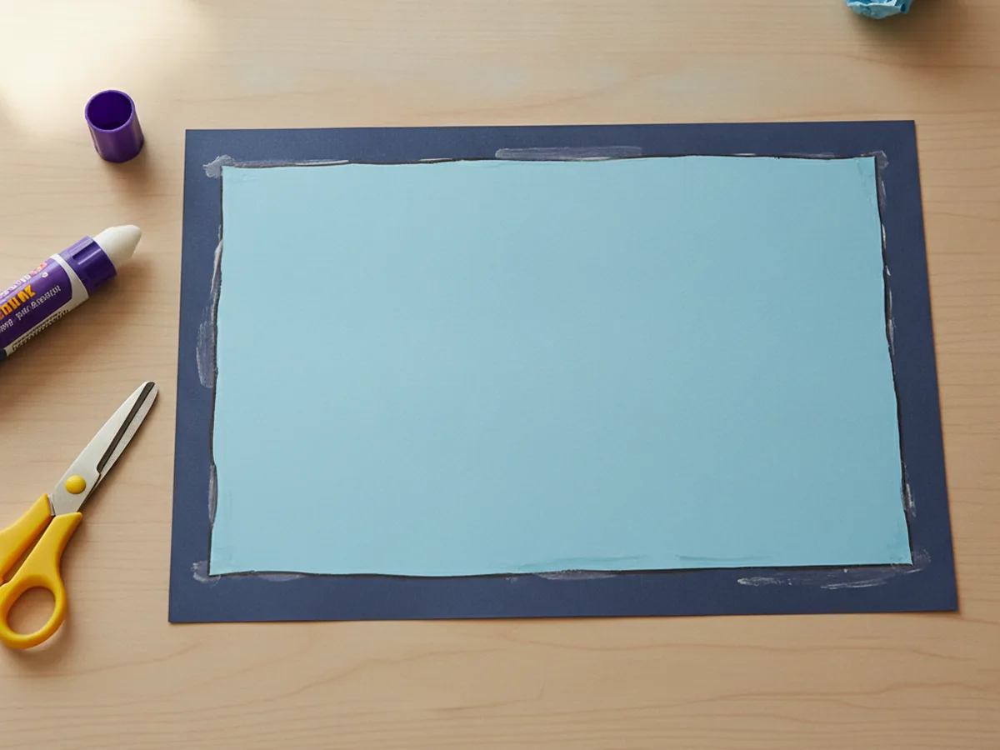
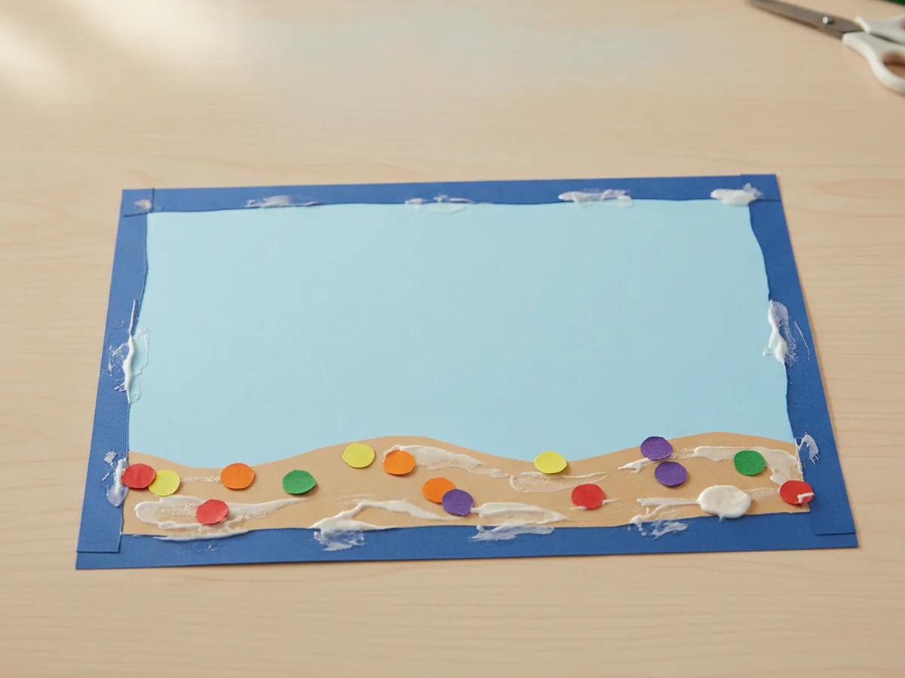
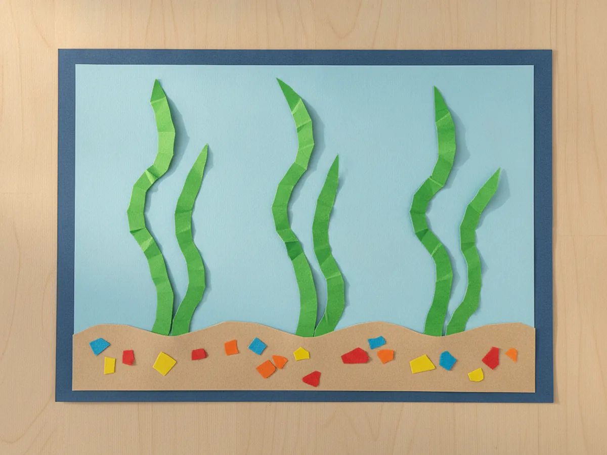
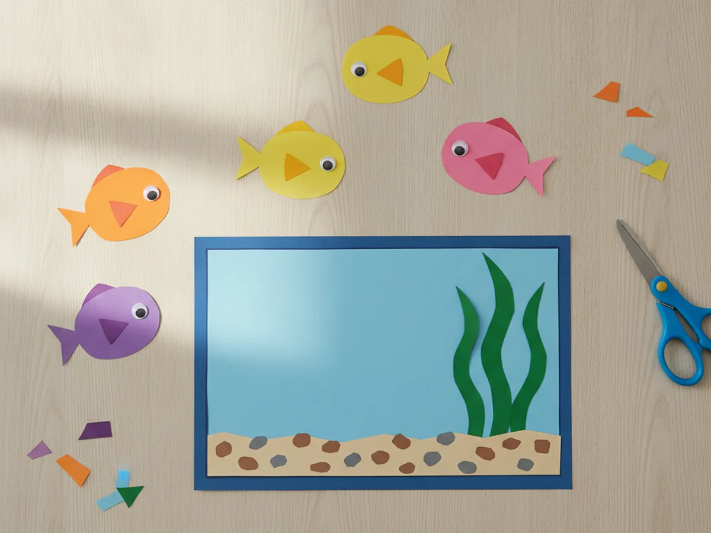
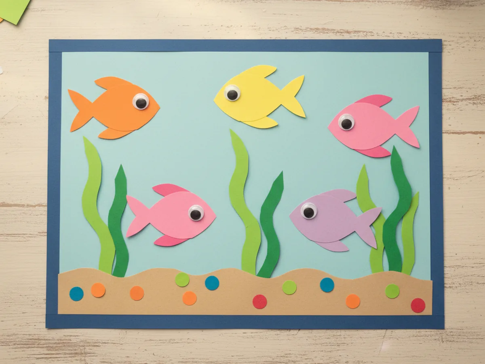
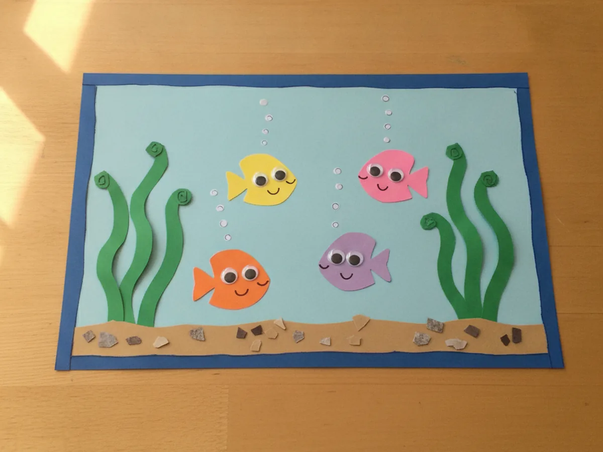

There is something about a little aquarium that makes kids press their noses right up to the glass, and you can capture all of that wonder with paper and a glue stick. This easy fish tank paper craft turns a few bright shapes into a cheerful paper aquarium, complete with colorful fish, wavy green seaweed, and tiny rising bubbles. It uses just paper, glue, and scissors, comes together in about thirty minutes, and gives your child their very own little underwater world to hang on the fridge. Grab some blue paper and let's make a happy paper fish tank together right at the kitchen table! 🐠
Why Kids Love This Craft
Kids love that this craft is a whole little world they get to build themselves. They decide how many fish go in, what colors they are, and exactly where each one swims. By the time the last fish is glued in place, they feel like a proud aquarium owner showing off their pet fish. That sense of "this is mine and I made it" is exactly what turns a simple craft into a happy memory. 😊
There is gentle learning tucked into all that fun too. Cutting the little fish and wavy seaweed gives small hands good scissor practice, and peeling and placing the googly eyes helps with finger control. Choosing colors and arranging the scene sparks creativity, while counting the fish and bubbles sneaks in a tiny bit of early math without anyone noticing.
Best of all, this fish tank paper craft is wonderfully forgiving. The fish do not need to be perfect, and a slightly wobbly seaweed strip only makes the tank look more playful and handmade. It stays low-mess with just paper and a glue stick, so it is an easy yes on a rainy afternoon, and it adapts to every age. Older kids can cut every piece themselves, while a toddler can simply press the fish down wherever you point, so the whole family can dive in together.

What You'll Need
Here is everything you need for this easy paper aquarium craft, and most of it is probably already waiting in your craft drawer.
- Light blue cardstock, a sturdy sheet makes the water inside your paper fish tank.
- Construction paper, an assorted pack covers the dark blue frame, tan sand, green seaweed, and bright fish.
- Washable glue sticks, for sticking down the water, sand, seaweed, and fish.
- Child-safe scissors, for cutting the fish, tails, and wavy seaweed.
- Googly eyes, for giving each little paper fish a fun, friendly face.
- Washable markers, for drawing bubbles, fish smiles, and little scales.
- A pencil, for lightly sketching the fish and seaweed shapes before cutting.
Step-by-Step Instructions
Ready to build your own little aquarium? Follow these simple steps and you will have a bright paper fish tank in no time, with a few helper tips along the way.
Step 1: Make the Tank Background
Start with the water, which is the heart of the whole scene. Cut a large rectangle from light blue cardstock, then glue it onto a slightly bigger sheet of dark blue construction paper so a thin border peeks out all the way around. That little border looks just like the edge of a glass tank and instantly makes your fish tank paper craft feel real. Press it flat with your hands so the whole rectangle sticks down nicely.

Step 2: Add the Sand and Pebbles
Every good tank needs a cozy bottom for the fish to explore. Cut a wide strip of tan or light brown paper with a gently wavy top edge and glue it along the bottom of the blue water. Then snip a few tiny circles in different colors and press them onto the sand as smooth little pebbles. This simple base gives your paper fish tank a finished, grounded look before anything else goes in.

Step 3: Plant the Seaweed
Now bring the tank to life with some swaying greenery. Cut two or three tall, wavy strips of green paper, a bit like long ribbons with curvy edges. Glue just the bottom of each strip onto the sand so they stand up from the floor of the tank and reach toward the top. A little tank looks so much friendlier once the green seaweed is waving inside it, and kids love deciding where each plant goes.

Step 4: Make the Paper Fish
Here comes everyone's favorite part, the fish. For each fish, cut a simple oval body from bright paper and add a small triangle at the back for the tail. Make a handful in different colors like orange, yellow, pink, and purple so the tank feels lively. Stick a googly eye near the front of each fish, and just like that, your little paper friends are ready to swim into the fish tank paper craft.

Step 5: Add the Fish to the Tank
Time to fill your aquarium. Let your child arrange the fish across the blue water, tucking some between the seaweed and letting others float near the top. Once everyone is happy with the layout, glue each fish down with a little dab on the back. Mixing the directions, so some fish face left and some face right, makes the whole paper fish tank look busy and alive, just like a real one.

Step 6: Add Bubbles and Finishing Touches
Now for the magic that makes the tank feel like it is really underwater. Use a marker to dot little white or pale bubbles rising up from each fish toward the top of the water. Add a tiny smile to each fish, a few simple scales, and maybe a small treasure chest or shell down in the sand. Step back and admire the cheerful paper aquarium you made together, fish, bubbles, and all. ✨

Variations to Try
Ocean Scene Version: Skip the tank frame and let the blue paper become the open sea instead. Add a paper crab on the sand, a starfish, and a few bubbles to turn the craft into a whole underwater adventure.
Counting Aquarium: Number each fish from one to five, or write a letter on each one, so folding open the scene becomes a sweet learning game. It is an easy way to sneak a little practice into a craft your preschooler already adores.
Shoebox 3D Tank: For older kids, tape the finished scene inside a shoebox and hang a few paper fish from string so they dangle in the middle. This little upgrade turns the flat fish tank paper craft into a real three-dimensional aquarium they can peek into.
Final Thoughts
This fish tank paper craft is one of those simple projects that gives back so much more than the handful of supplies it takes. It is quick, low-mess, and full of cheerful color, and watching your child design their own little underwater world is the sweetest part of all. Whether you fill it with two fish or a whole school of them, the real treasure is the time spent snipping, gluing, and giggling side by side. It is the kind of calm, screen-free craft that becomes a happy little memory, and you end up with a bright keepsake your child will proudly point to again and again. 💙
I would love to see the colorful aquarium your family makes. Tape it to the fridge, prop it on a shelf, and most of all, savor this warm little moment with your child. Happy crafting, friend!
More Crafts You'll Love
If your little one enjoyed filling this paper aquarium, these other sweet ocean crafts make the perfect next project: